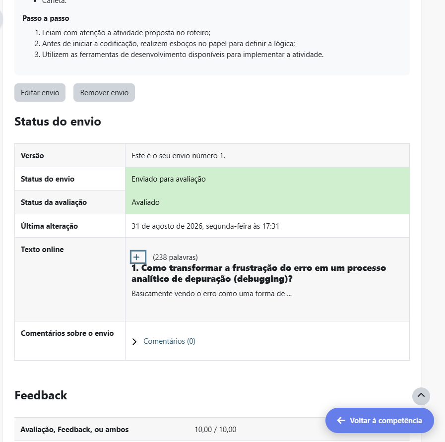
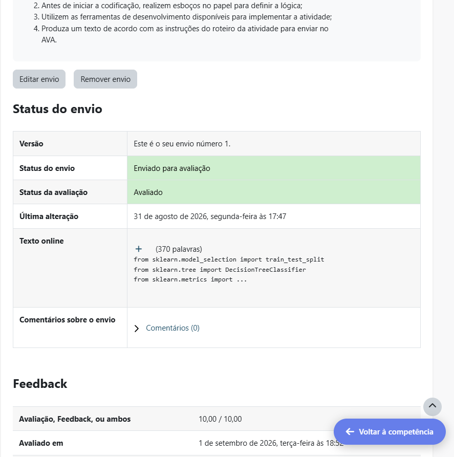
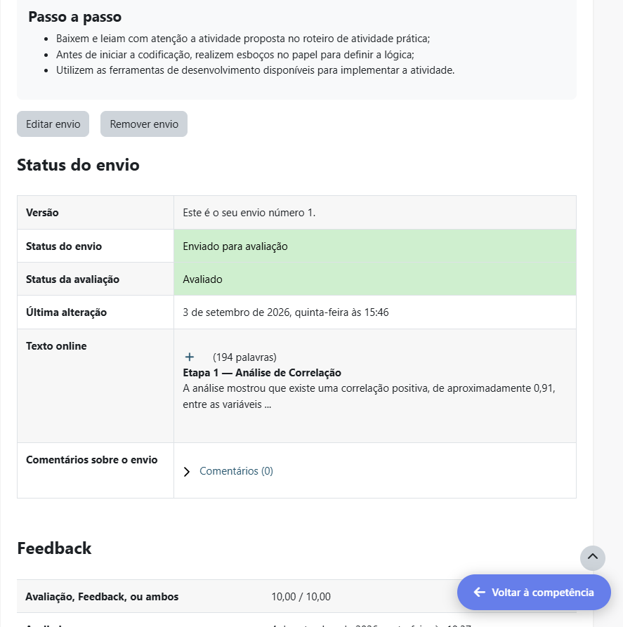
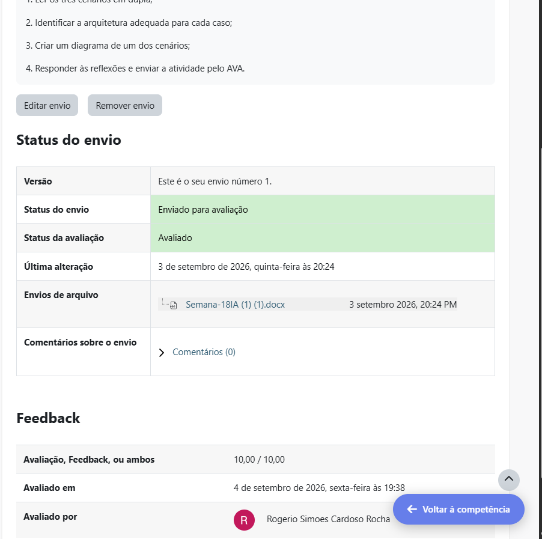
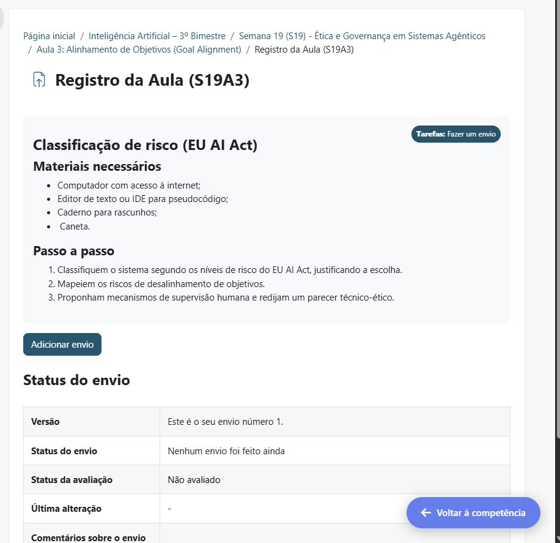
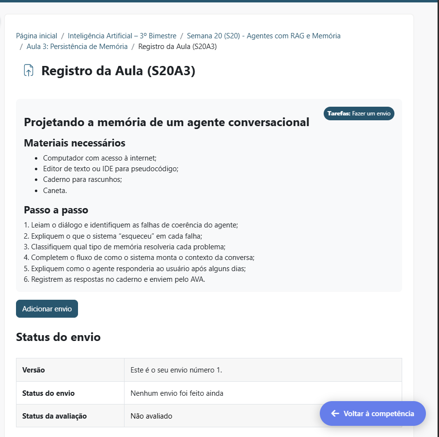

Inteligência Artificial
Registro dos conteúdos e atividades desenvolvidos durante o 3° bimestre.
Resumo do que aprendi nesse bimestre
Em I.A, pude aprender mais sobre o processamento de informações e tomada de decisões das máquinas. Assim como também, como dar prompts melhores e como os dados funcionam.
Semana 15
TEMA
Introdução à IA - história, áreas e impacto
Evidência da atividade
Print da atividade da Semana 15:

Semana 16
TEMA
Aprendizado supervisionado - pipeline de ML
Evidência da atividade
Print da atividade da Semana 16:

Semana 17
TEMA
Pré-Processamento e Feature Engineering
Evidência da atividade
Print da atividade da Semana 17:

Semana 18
TEMA
Do Modelo à Ação: Introdução aos Agentes
Evidência da atividade
Print da atividade da Semana 18:

Semana 19
TEMA
Ética e Governança em Sistemas Agênticos
Evidência da atividade
Print da atividade da Semana 19:

Semana 20
TEMA
Agentes com RAG e Memória
Evidência da atividade
Print da atividade da Semana 20:
